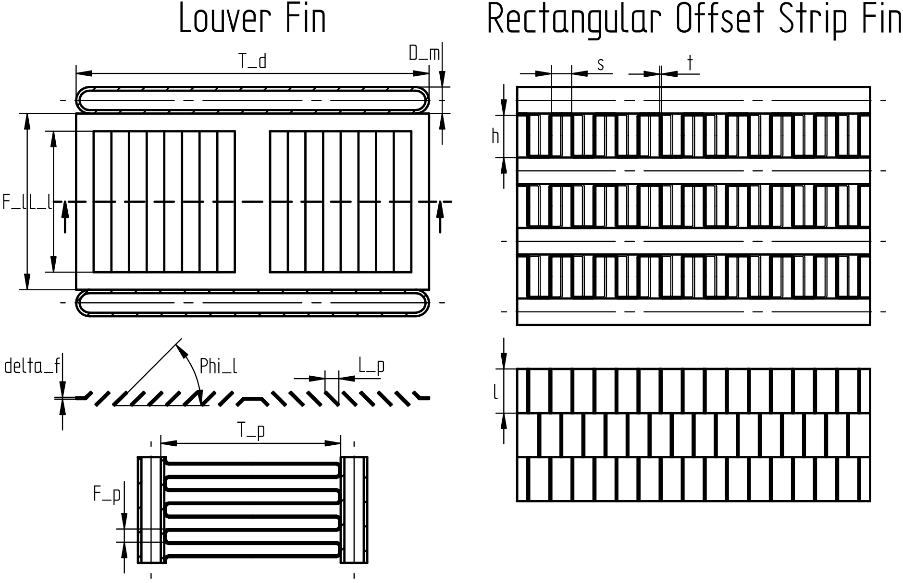
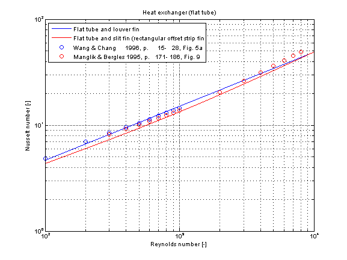

Calculation of the mean convective heat transfer coefficient kc for the air-side heat transfer of heat exchangers with flat tubes and several fin geometries.
Fuctions kc_flatTube and kc_flatTube_KC
There are basically three differences:
-
The function kc_flatTube is using kc_flatTube_KC but offers additional output variables like e.g. Reynolds number or Nusselt number and failure status (an output of 1 means that the function is not valid for the inputs).
-
Generally the function kc_flatTube_KC is numerically best used for the calculation of the mean convective heat transfer coefficient kc at known mass flow rate.
-
You can perform an inverse calculation from kc_flatTube_KC, where an unknown mass flow rate is calculated out of a given mean convective heat transfer coefficient kc
Restriction
- According to the kind of fin geometry the calculation is valid in a range of Re from 100 to 5000.
- medium = air
Geometry

Calculation
The mean convective heat transfer coefficient kc for heat exchanger is calculated through the corresponding Coulburn factor j :
j = f(geometry, Re)
with the resulting mean convective heat transfer coefficient kc
kc = j * Re_L_p * Pr^(1/3) * lambda / L_p (Louver fin)
or
kc = j * Re_D_h * Pr^(1/3) * lambda / D_h (Rectangular offset strip fin)
with
| D_h | as hydraulic diameter [m], |
| kc | as mean convective heat transfer coefficient [W/(m2K)], |
| lambda | as heat conductivity of fluid [W/(mK)], |
| L_p | as louver pitch [m], |
| Nu_D_h = kc*D_h/lambda | as mean Nusselt number based on hydraulic diameter [-], |
| Nu_L_p = kc*L_p/lambda | as mean Nusselt number based on louver pitch [-], |
| Pr = eta*cp/lambda | as Prandtl number [-], |
| Re_D_h = rho*v*D_h/eta | as Reynolds number based on hydraulic diameter [-], |
| Re_L_p = rho*v*L_p/eta | as Reynolds number based on louver pitch [-], |
Verification
The mean Nusselt number Nu representing the mean convective heat transfer coefficient kc is shown below for different fin geometries at similar dimensions.

References
- Y.-J. CHANG and C.-C. WANG:
- A generalized heat transfer correlation for louver fin geometry.
In International Journal of Heat and Mass Transfer, volume 40, No. 3, pages 533-544, 1997.
- Y.-J. CHANG and C.-C. WANG:
- Air Side Performance of Brazed Aluminium Heat Exchangers.
In Journal of Enhanced Heat Transfer, volume 3, No. 1, pages 15-28, 1996.
- R.-M. Manglik, A.-E. Bergles:
- Heat Transfer and Pressure Drop Correlations for the Rectangular Offset Strip Fin Compact Heat Exchanger.
In Experimental Thermal and Fluid Science, volume 10, pages 171-180, 1995.